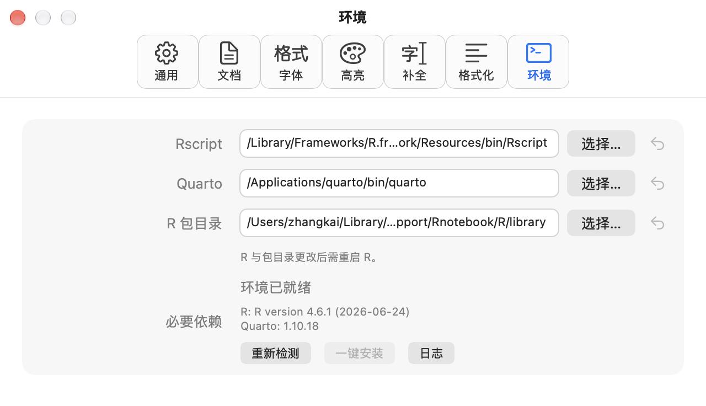

组件与环境
Rnotebook 负责编辑和组织操作；R 负责统计计算；Quarto 负责把文稿排版为报告。理解三者的分工，有助于定位“能编辑但不能运行”或“能运行但不能导出”的问题。
各组件做什么
| 组件 | 用途 | 提供方式 |
|---|---|---|
| 原生 Code / Visual 编辑器 | Markdown 解析、排版、公式、表格、图片和导航 | 随应用提供；基于裁剪并适配的 Edmund、swift-markdown、SwiftMath |
| 语法与 R 编辑辅助 | Markdown/R 高亮、R 补全、当前块格式化 | 内置 Tree-sitter、Raven 和 Air |
| R / Rscript | 执行 R 代码，创建变量与图形 | 使用本机安装的 R，设置中选择 Rscript |
| R 包库 | 为代码提供函数；运行与导出需要的包从中加载 | 使用环境页指定的安装目录及 R 可用库 |
| Quarto | 读取 QMD/RMD、执行文稿并调用排版引擎 | 使用本机 Quarto |
| PDF 排版引擎 | 生成 PDF | LaTeX 使用本机 TeX 环境；Typst 由可用的 Quarto 工具链处理 |
| Finder Quick Look | 不启动 R 即可预览 QMD/RMD | 随应用提供，支持 Code / Visual |
Raven 提供补全，Air 调整 R 代码格式；它们不代替负责计算的 R 会话。Markdown 是文本标记语法，QMD 在此基础上加入文稿配置和可执行代码。.rmd 也能编辑和运行常见 R 块；本软件导出使用 Quarto。
配置环境的步骤

- 安装适合本机的 R 和 Quarto，打开“Rnotebook → 设置… → 环境”。
- 检查 Rscript 与 Quarto 检测结果；路径不正确时，点击选择并指定相应可执行文件。
- 需要指定包安装位置时选择 R 包目录。根据界面依赖状态，明确安装缺失包。
- 更换 R 或包目录后，重启文档的 R 会话，让新的配置生效。
- 在新笔记的 R 块中运行
R.version.string和1 + 1，确认版本与计算结果。
R 安装包入口见 R 项目，Quarto 安装说明见 Quarto 入门。
依赖按任务准备
只写文字需要编辑器即可。交互运行需要 R 及界面提示的运行依赖；代码调用 ggplot2 等包时，另行安装该包。Quarto 的 R 渲染使用 knitr 路线，需准备相应 R 包。HTML、Word 不依赖 TeX；LaTeX PDF 需要 TeX、所用字体和文稿要求的宏包，中文文稿还要配置中文支持。
“关于 Rnotebook → 第三方组件与许可证…”列出应用附带组件及许可证原文。R、Quarto 和用户安装的 R 包由各自安装环境提供。